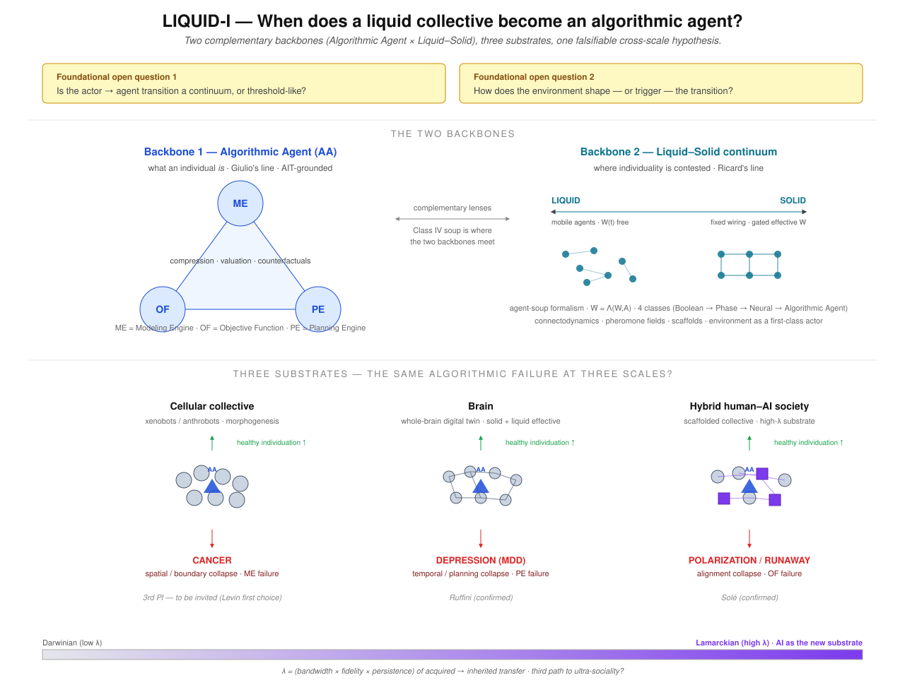

Solé × Levin × Ruffini — a three-PI ERC Synergy on hyper-agency
Ricard Solé's LiquidAI proposal is a beautiful, classical complex-systems vision for intelligence as ecological coevolution. The unified Synergy reframes its scientific object as hyper-agency — the agency that emerges when agents themselves become substrate for higher-order agents — and brings three complementary angles to bear on it: Solé's complexity-and-liquid-networks, Levin's substrate-independent cognition, and Ruffini's algorithmic theory anchored in the brain as paradigmatic collective agent. This page summarizes all three, plus the resulting Synergy structure, for use in shaping the joint ERC submission.
Cognition emerges not inside isolated agents but from closed causal loops linking agents, societies, and environments. Environments themselves participate in computation — pheromone fields, written records, institutions, AI infrastructures are all externalized cognitive substrates.
WP1 Theory + morphospaces · WP2 Synthetic biology (xenobots, anthrobots) · WP3 Digital ecosystems (LLM agents) · WP4 Hybrid AI–human ecologies.
The vision holds together. It is also unilateral and classical: morphospace and complexity drain are metaphors rather than measurable objects; there is no formal vocabulary for what an agent is; the human brain — the paradigmatic case of a collective of cells becoming a unified agent with structured experience — is absent; and there is no normative axis distinguishing flourishing from pathologic realizations. The BCOM reframing fixes each of these.
Three PIs, three angles, one new science. Hyper-agency — the agency that emerges when agents themselves become the substrate for a higher-order agent — is the natural scientific object of LiquidAI, and it is not yet a science. Classical cognitive science treats individual agents; ecology treats populations; complex-systems work treats coupling. None of these gives us a unified vocabulary or methodology for the higher-order agency that emerges across all the substrates the project studies: cell collectives, multicellulars, brains, eusocial colonies, markets, LLM soups, hybrid AI–human ecosystems, Gaia. The Synergy proposal is that three converging angles — Solé's, Levin's, Ruffini's — each insufficient alone, together constitute the missing science.
Statistical physics of major evolutionary transitions; liquid-brain dynamics; morphospaces of cognition; complexity drain; synthetic biology with Levin.
Brings: the dynamics of collective formation, the formal apparatus of phase transitions in networks, the morphospace itself as the landscape on which the science lives.
Bioelectric signaling as cognitive substrate; basal and scale-free cognition; cognitive light cones; xenobots and anthrobots as goal-directed synthetic agents; the TAME framework.
Brings: substrate-independence made concrete and experimental; multiscale agency from cells up; the synthbio probe for collective-to-agent transitions in vivo.
KT (Kolmogorov theory): Turing Pairs, ME / OF / PE modules, SEEN, telehomeostasis; Algorithmic Agent Soups; the brain as paradigmatic collective agent; computational neurophenomenology; Agent Souper.
Brings: the formal definition of agency; the only completed collective-to-agent transition we have empirical access to (the brain); the diagnostic vocabulary for flourishing vs pathologic.
The three angles are not redundant. Solé's dynamics tell us how collective formation happens at the level of network and statistical-physics structure but leave open what the result is. Levin's substrate-independence tells us where agency can live and gives us a synthetic-biology handle on it, but does not yet supply a threshold criterion for when a collective crosses into agency. Ruffini's KT gives the formal threshold and the only completed worked example (the brain) but needs the dynamics and substrate work to extend beyond it. Each angle fills a gap the other two have. Their composition — a unified science of hyper-agency — is what an ERC Synergy is supposed to be for, and what no single PI could deliver alone.
In our ERC planning meeting, we (Ruffini & Castaldo) crystallized the Liquid-I framing into a single conceptual map. It names the program's central scientific question — "When does a liquid collective become an algorithmic agent?" — and resolves it as the intersection of two complementary backbones, three substrates, and a single falsifiable cross-scale hypothesis.

Backbone 1 — Algorithmic Agent (AA). What an individual agent is. AIT-grounded; modules ME / OF / PE; compression, valuation, counterfactuals. The BCOM/Ruffini contribution.
Backbone 2 — Liquid–Solid continuum. Where individuality is contested. LIQUID (mobile agents, $W(t)$ free) ↔ SOLID (fixed wiring, gated effective $W$); agent-soup formalism $\dot W = \Lambda(W, A)$; four canonical classes Boolean → Phase → Neural → Algorithmic Agent. The Solé contribution.
The two backbones meet at Class IV — the Algorithmic Agent Soup. This intersection defines the project's central object: a liquid collective whose dynamics are formalized by the soup, and whose elements are themselves algorithmic agents.
The synthesis hypothesis: pathology at each scale is the characteristic collapse of one of the three KT modules. Each substrate is therefore both a test of the algorithmic-agent framework and a clinical/empirical anchor.
| Substrate | Healthy individuation | Pathology | Module failure | PI |
|---|---|---|---|---|
| Cellular collective xenobots / anthrobots · morphogenesis |
Coherent multicellular self | CANCER spatial / boundary collapse |
ME failure | Levin (invited) |
| Brain whole-brain digital twin · solid + liquid effective |
Coherent neural self | DEPRESSION (MDD) temporal / planning collapse |
PE failure | Ruffini (confirmed) |
| Hybrid human–AI society scaffolded collective · high-λ substrate |
Coherent collective self | POLARIZATION / RUNAWAY alignment collapse |
OF failure | Solé (confirmed) |
A second cross-cutting dimension. $\lambda = $ (bandwidth × fidelity × persistence) of the acquired-to-inherited transfer. Biological evolution sits at low $\lambda$ (Darwinian); cultural transmission raises it; AI as a new substrate pushes it toward $\lambda \to 1$ (Lamarckian). The open question: is AI-mediated transmission a third path to ultra-sociality? — distinct from both the eusocial (low-λ, biology-only) and human-cultural (intermediate-λ) routes that Solé's original proposal contrasts.
The BCOM contribution restructures the project around three Synergy-defining questions, motivated by the algorithmic theory of cognition (KT).
When does a higher-order Turing Pair come into existence, with collective ME, OF, and PE running as a coupled loop? Falsifiable. Same coordinates across cells, colonies, markets, LLM soups, brains, hybrid systems. Annex §5.
86 billion cells, themselves micro-agents, became a unified agent with structured experience. The brain is the only empirically accessible case of a completed collective-to-agent transition — and is itself a liquid brain. WP5.
ME fragmentation, OF capture, PE collapse, pathological SEENs — the module-level vocabulary that diagnoses mental disorders diagnoses collective pathology at every scale. WP3, WP4, WP5.
An algorithmic agent is a Turing Pair (A, W) in which A runs three coupled modules over a shared memory substrate:
Agents do not only store models, objectives, and policies — they continuously run them. Each active execution can itself migrate outside the agent (stigmergy, peer review, ML pipelines, markets, RLHF, institutions, agentic AI frameworks). This is what complexity drain is, decomposed module-wise.
Why do collectives become agents? Because persistence is easier at the higher scale.
The driver of collective-agency transitions, in KT terms, is telehomeostasis: the persistent pattern's drive to maintain itself. Agents form because persistence is easier as a coupled ME/OF/PE loop than as a passive structure. Collectives become agents because persistence is easier still at the collective scale. Going meta — sharing M, O, or P across agents — trades individual identity and agency for participation in a larger, more persistent pattern.
The degree of sharing of each module across agents is itself a measurable coordinate of the morphospace: at low sharing, a population of independent agents; at high sharing, a single collective agent with diluted individuality. Voluntary contemplative practices — meditation, certain mystical traditions — may be instances of voluntary telehomeostatic transcendence at the individual–collective boundary; sensitive, empathic, and otherwise apparently "weak" agents may, by being more permeable to shared M and O, be the active drivers of these transitions in human collectives.
The brain is the only paradigmatic, empirically accessible case of a completed collective-to-agent transition. Eighty-six billion cells, themselves micro-agents, have become a unified agent with structured experience. Whatever else the LiquidAI program studies — colonies, multicellulars, LLM soups, hybrid ecologies — the brain is the worked example of what success looks like, and the only place where we have first-person evidence of structured experience.
Crucially, the brain is itself a liquid brain in Solé's own sense: effective connectivity is dynamical, gated by inhibition, rerouted by attention, updated continuously by learning. The operative connectome is a state-dependent object that co-evolves with the cells it links. The brain is therefore not an exception to the LiquidAI framework but its paradigmatic example, and the methodology developed for it transfers directly to the digital and hybrid liquid systems of WP3 and WP4.
Computational Neurophenomenology, Mental Health, and the Diagnosis of Collective Pathology.
Cortical predictive-coding circuits realize ME; limbic/interoceptive networks realize OF; prefrontal executive circuits realize PE. Neurophenomenology (Varela, Thompson) connects SEENs to neural dynamics. EEG-derived complexity, computational phenotyping, longitudinal cohorts.
Intra-agent: excessive prior compression (depression), precision misallocation (anxiety), premature model commitment (psychosis), OF over-compression (addiction).
Inter-agent: defective participation in OF/ME/PE drains — depression as broken OF-drain coupling, addiction as adversarial OF capture, psychosis as ME-drain desynchronization. Same vocabulary applies at the collective scale.
Two corollaries sharpen the agency criteria.
First: the modules need not be explicitly localized or readable to count. A cell satisfies all three KT axioms implicitly — ME in genome and metabolic–signaling networks, OF in homeostatic set-points, PE in signal-cascade action selection — and a cell is clearly an agent. By the same standard Gaia is one: the biosphere is a planet-spanning distributed compressive model; Daisyworld-style set-points act as a non-trivial OF; cybernetic feedback machinery selects responses that restore them.
Second: an agent's effectors may range from lazy/homeostatic (reaching only inward, regulating only itself — Gaia, most cells) to active (reaching across the boundary to reshape external conditions — brains, organisms with tools, hybrid AI–human ecologies). The external-effector axis is independent of the three module-drain coordinates and belongs as an explicit dimension of the morphospace.
Gaia is already an agent, lazily so. The question WP4 inherits is whether the human–AI coupling now in formation will give it active effectors on its cosmic boundary conditions — climate engineering, atmospheric and orbital intervention, eventual heat-shedding to space — and, by the WP5 diagnostic, whether the resulting planetary agent is flourishing. On current trajectories, the answer is not reassuring.
| WP | Title | Lead | Role |
|---|---|---|---|
| WP1 | Theory and Morphospaces of Collective Cognition (amended) | Solé / Ruffini / Levin | Algorithmic foundations (Ruffini); statistical-physics and morphospace (Solé); substrate-independent / basal-cognition axis (Levin). Gains the collective-agency transition surface. |
| WP2 | Cellular collective — synthetic biology & ME failure (amended) | Levin / Solé | Xenobots and anthrobots as synthetic collective agents. The cellular-substrate pathology is cancer (spatial / boundary collapse · ME failure). |
| WP3 | Digital ecosystems / LLM Soups & OF failure (amended) | Solé / Ruffini | When does an LLM Agent Soup cross the agency threshold? Hybrid-society pathology is polarization / runaway (alignment collapse · OF failure). |
| WP4 | Hybrid Human–AI Ecologies (amended) | All three | Threshold-crossing at human and planetary scale (Gaia gaining active effectors); bioelectric / hybrid bio-AI interfaces (Levin); WP5 diagnostic vocabulary applied at collective scale; the high-λ Lamarckian regime as third path to ultra-sociality. |
| WP5 | The Brain as Paradigmatic Collective Agent — Computational Neurophenomenology & PE failure (new) | BCOM | Empirical anchor (whole-brain digital twin, computational psychiatry); brain-substrate pathology is depression (temporal / planning collapse · PE failure). Diagnostic vocabulary transferred to WP2 (cancer/ME) and WP3 (polarization/OF). |
| WP6 | Agent Souper — Open Algorithmic Multi-Agent Platform (new, cross-cutting) | BCOM | Experimental engine. Operationalizes WP0056. KT-architected, instrumented, MCP-compatible, AGPL-3.0. |